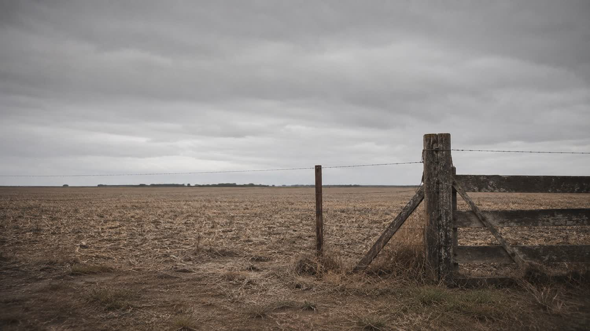

Renegociar sem saber quanto a lavoura paga é só empurrar a conta para a frente.
Prazo e juros novos só resolvem se o caixa fechar depois. Por isso a renegociação aqui começa pelo número: produtividade real por hectare contra custo real por hectare, e a dívida inteira na mesa.
Atendimento em Jataí, Rio Verde e região. Sigilo em todo atendimento.
Por que a segunda renegociação costuma ser pior que a primeira
Renegociar não é fraqueza. Renegociar no escuro é.
O alongamento que só empurra
Prazo esticado sem mexer na causa devolve o mesmo problema dois anos depois, com saldo maior. Alongar só funciona quando a conta do ciclo fecha no prazo novo.
Pessoa física e jurídica na mesma bagunça
Despesa da família, pró-labore e custeio saindo da mesma conta escondem onde o dinheiro está indo — e o banco enxerga isso antes de você.
Sentar com o banco sem número
Quem chega sem saber a própria capacidade de pagamento aceita a proposta que vier. Com a planilha na mão, a conversa muda de lado.
Antes de qualquer proposta
O que é levantado antes de falar com o credor.
Renegociação de dívida rural aqui anda casada com gestão financeira. Não é serviço extra: é a única forma de saber se a proposta que está na mesa é boa ou só parece boa.
- Produtividade real: sacas por hectare, por talhão e por cultura
- Custo real por hectare, insumo a insumo
- Todas as dívidas por credor, garantia, vencimento e encargo
- Cédulas e contratos: o que foi contratado contra o que está sendo cobrado
- Retirada da família e pró-labore separados do caixa da atividade
- Capacidade real de pagamento por safra, com margem para o ano ruim
A terra continua sua
O objetivo do trabalho não é ganhar uma discussão: é manter a atividade rodando e o patrimônio no nome da família. Toda proposta é medida por isso.
Existem caminhos diferentes — repactuação direta com o credor, alongamento previsto em lei, discussão de encargo quando há fundamento, reestruturação do passivo inteiro. Qual serve depende do número, não do discurso.
Como o escritório trabalha
Quatro etapas, e a negociação é a terceira.
-
Diagnóstico
Levantamento da dívida inteira e da operação. Nada de olhar só o contrato que está apertando mais.
-
A conta
Custo, produtividade e capacidade de pagamento viram planilha. É o que dá lastro à conversa seguinte.
-
Proposta e negociação
Proposta construída com número, apresentada a cada credor. Judicial ou extrajudicial, conforme o caso pedir.
-
Acompanhamento
Acordo assinado não é o fim. O que garante que ele seja cumprido é a gestão que continua depois.

Quem cuida do seu caso
Lucas não vende processo. Protege patrimônio, família e legado.
O trabalho começa antes da urgência: estudar o Plano Safra, acompanhar Banco Central, Conab e as decisões do STJ sobre crédito rural — para chegar até você com clareza, não com promessa.
Escritório em Jataí, GO, com atendimento na região: Serranópolis, Ponte de Pedra, Mineiros, Rio Verde, Montividiu, Chapadão do Céu e vizinhança. Quando o caso pede, a conversa é na fazenda.
- Segurança
- Calma
- Racionalidade
- Estratégia
- Presença
- Respeito
Perguntas frequentes
O que o produtor pergunta na primeira conversa
Ainda estou em dia, só apertado. É cedo para procurar advogado?
É o melhor momento, e é o mais raro. Quem chega antes do vencimento tem mais caminho disponível — inclusive a repactuação simples, que deixa de existir depois que o crédito é levado a protesto ou a execução.
Isso vai sujar meu nome ou fechar meu crédito?
Cada caminho tem efeito diferente sobre cadastro e crédito futuro, e isso entra na análise antes da decisão — não depois. Renegociação bem conduzida existe justamente para preservar a relação com o credor, não para queimá-la.
Dá para revisar os juros da cédula?
Depende do que a cédula contratou e do que está sendo cobrado. Revisão não é automática nem é caminho padrão: ela só faz sentido quando a conferência da conta mostra divergência com fundamento. Prometer redução antes de ler o contrato seria conversa de vendedor.
Preciso levar quais documentos?
Para a primeira conversa, o que estiver à mão já basta: contratos e cédulas, extratos, notas de insumo e uma noção da área plantada e da produtividade das últimas safras. O levantamento completo é feito junto, depois.
Vocês atendem produtor de outra cidade?
Sim. A base é Jataí, o atendimento presencial cobre o Sudoeste goiano e casos de fora são atendidos à distância, com deslocamento quando o caso justifica.
Quanto custa?
Honorários são definidos caso a caso e combinados por escrito antes de qualquer trabalho, dentro dos parâmetros da tabela da OAB/GO. Um passivo com um credor e um passivo com seis credores não dão o mesmo trabalho.
Primeiro passo
Fale sobre sua dívida, com clareza e sem compromisso.
Preencha abaixo. O escritório entra em contato para entender sua situação e explicar quais caminhos existem para o seu caso — inclusive quando o melhor caminho não é o judicial.